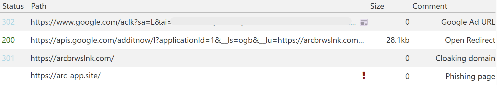

CWE-601 in malvertising campaign (11-8-2025)
- Date: 11/8/2025
- Description: An Open Redirect vulnerability in the additnow functionality of apis.google.com is being exploited in malvertising campaigns.
- Severity: Medium
- Reporter: Jérôme Segura
- Reported to Google: 11/8/2025
Technical notes
Searching for the Arc Browser on Google Search leads to the following ad:

We can see the ad display URL is using drive.google.com which helps to impersonate Google and conforms to the tracking template requirements.
Here are the parameters for the GET request for apis.google.com:

Open Redirect URL: hxxps[://]apis[.]google[.]com/additnow/l?applicationId=1&__ls=ogb&__lu=hxxps[://]arcbrwslnk[.]com&gad_source=1&gad_campaignid=[removed]&gbraid=[removed]
This exact open redirect vulnerability was publicly disclosed on 10/16/2025: https://seclists.org/fulldisclosure/2025/Oct/11
The redirect URL is for the domain arcbrwslnk[.]com which acts as a cloaking domain. It fingerprints visitors and decides whether to redirect them to drive.google.com (decoy) or to another domain.
The domain arc-app[.]site is likely a replica of the real Arc Browser website. However, at the time of checking, the domain was no longer resolving.
Recommendations
In order to avoid impersonation attacks of Google properties, a solution would be to fix this Open Redirect so that malvertisers aren’t able to use it.
Miscellaneous
Open Redirect example (safe): https://apis.google.com/additnow/l?applicationId=1&__ls=ogb&__lu=https://jeromesegura.com"
Vendor response
Acknowledged on 11/8/2025